There's a particular kind of happiness in walking past a cottage garden in full bloom, roses spilling over a fence, lavender swaying in the breeze, wildflowers acting like they own the place. A cottage garden doesn't just decorate a yard. It tells a story, and most of us secretly want our own outdoor space to feel like it belongs in one.
People assume the look is effortless, but it actually takes a bit of planning. Scattering plants and hoping for the best usually ends in something closer to a weed patch than a storybook scene. These twelve ideas deliver the real thing.
Pick one or two to start, whichever feels most doable for the yard you actually have right now, and let the rest of the list become next season's project instead of this weekend's deadline.

Cottage Style vs. Every Other Garden Style
A cottage garden is overflowing, layered, informal, and a little unpredictable by design. Compare that to a formal garden, symmetrical, neat, geometric, usually with trimmed hedges, or a modern garden, which leans minimalist with clean lines and plenty of hardscape. Cottage style wins out whenever warmth matters more than structure.
A few essentials are worth keeping in mind while planning: abundance over minimalism, a genuine mix of plant heights and types, natural winding pathways instead of straight lines, and at least a few vintage or rustic touches. None of it needs to be perfect. A quirky old statue or a weathered bench is worth working in if you genuinely love it. That's what makes the space unmistakably yours.
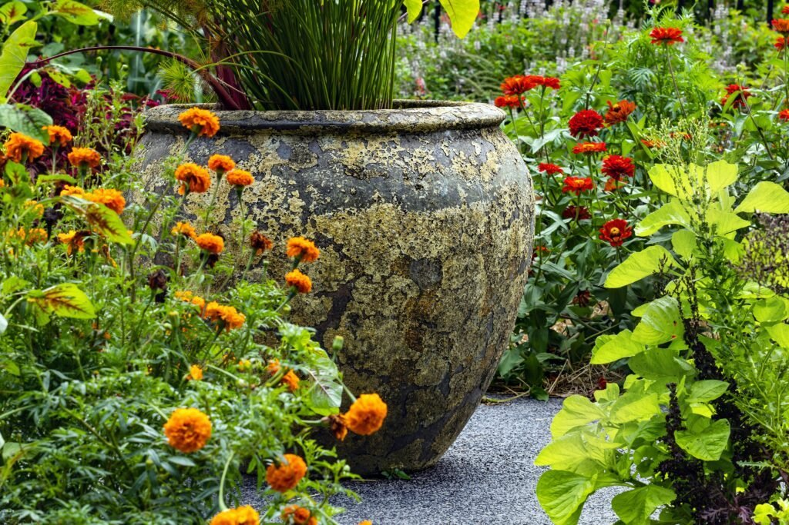
What Actually Makes a Garden Read as Cottage Style
Cottage gardens trace back to English countryside homes, where flowers, herbs, and vegetables all grew together in a mix that was as functional as it was charming. The goal was never perfection, it was abundance. The beauty comes from an unstructured, layered look: plants grow close together, colors mingle freely, and textures overlap in a way that feels natural rather than planned.
That's exactly why a small yard, or an imperfect eye for design, isn't actually a barrier here. Cottage gardens thrive on a little chaos. They feel alive in a way manicured, symmetrical gardens rarely do, closer to a conversation with nature than a design statement.
Worth Garden Large Urn Planter, 14 Inch, Lightweight Magnesium Oxide
Shop on AmazonZinnia Seeds, California Giants Mix, 1 Ounce Packet, 3,000 Seeds
Shop on Amazon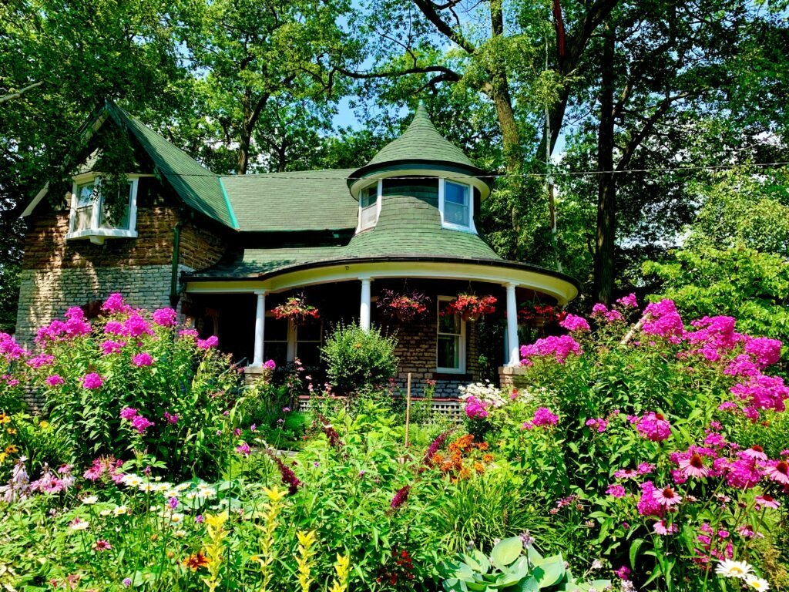
12 Cottage Garden Ideas Worth Trying
1. Rotate Color Through the Seasons
A real cottage garden keeps surprising you across the whole year rather than peaking once and going quiet. Planting with the seasons in mind is what keeps it feeling alive instead of static.
Tulips, daffodils, and forget-me-nots carry spring; roses, foxgloves, and lavender take over for summer; asters, chrysanthemums, and ornamental grasses bring fall its own character. Evergreens and structural plants keep winter from feeling empty.
Think of it less like a one-time planting plan and more like planning outfits for every season, different each time, the same underlying charm running through all of it.
2. Decorate With Charming Garden Accessories
This is where your actual personality gets to show up. Cottage gardens thrive on quirky, collected-over-time details rather than anything that looks purchased as a matching set.
A vintage watering can tucked into a border, a painted birdhouse hanging from a tree, weathered terracotta pots stacked by the fence, an old wheelbarrow repurposed as a planter, any of it works.
A playful, hand-painted birdhouse shaped like a tiny camper van is exactly the kind of detail that keeps a garden from feeling too designed. Find something you genuinely love at a flea market and work it in. That's what makes the space feel like yours.
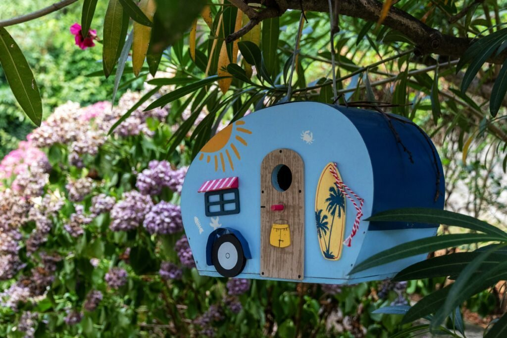

3. Tuck In Herbs and Edible Touches
Cottage gardens were never just about pretty flowers. Historically, people grew herbs, vegetables, and fruit right alongside their blooms, and that practical streak is part of the authentic look.
A patch of lavender or rosemary, or even a small raised bed of salad greens, feels both true to the style and genuinely useful. Herbs also smell incredible and pull in pollinators without any extra effort.
Edging a path with herbs is a particularly good trick. It looks intentional and means your garden smells amazing every time you brush past it.
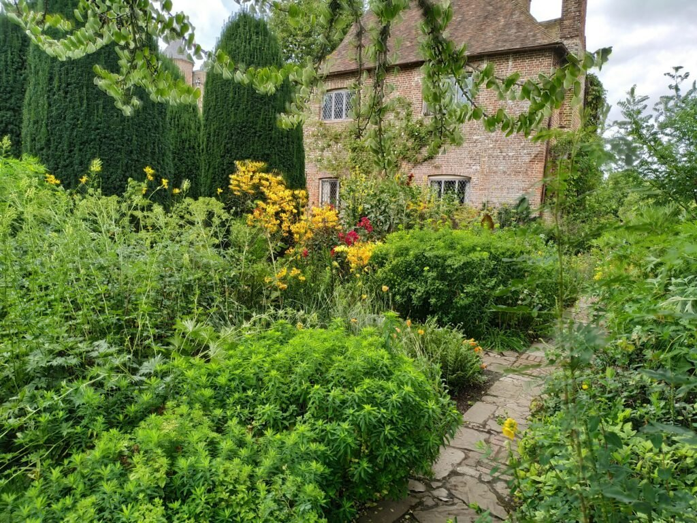
4. Add One Genuinely Whimsical Touch
No cottage garden is complete without a sprinkle of actual whimsy, a hidden fairy door tucked at the base of a tree, mismatched stepping stones that lead nowhere in particular, or a lantern that glows at dusk.
This is honestly what separates a nice garden from a magical one. A single small, unexpected detail does more than any amount of careful planting.
Keep it to one or two touches, a tiny painted door tucked into tree bark is a good example. Whimsy works because it's a surprise. Overdo it and it stops feeling like a discovery.
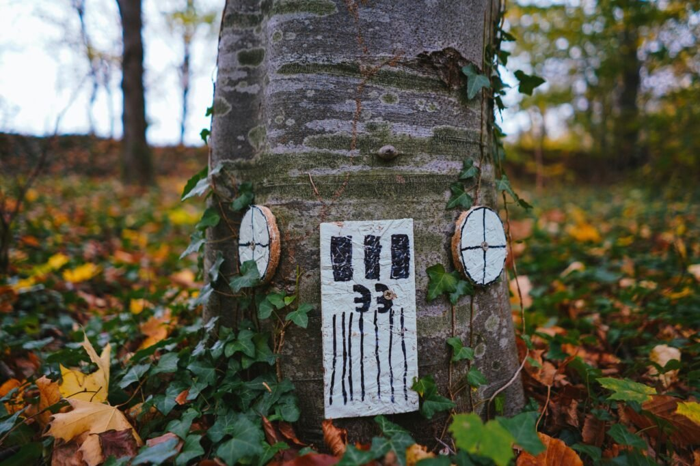
5. Add a Winding Path
Every storybook garden needs a path, and it should never be a perfectly straight one. A winding gravel or stone pathway makes you feel like you're actually being led somewhere.
Pea gravel gives you that satisfying crunch underfoot, while stepping stones surrounded by thyme or moss lean dreamier. Either way, a path lets you actually walk through your flowers without trampling them.
Curve it, even slightly. A straight line reads as a modern backyard, while a curve reads as an escape. It's a small design choice that changes the entire feeling of the space.
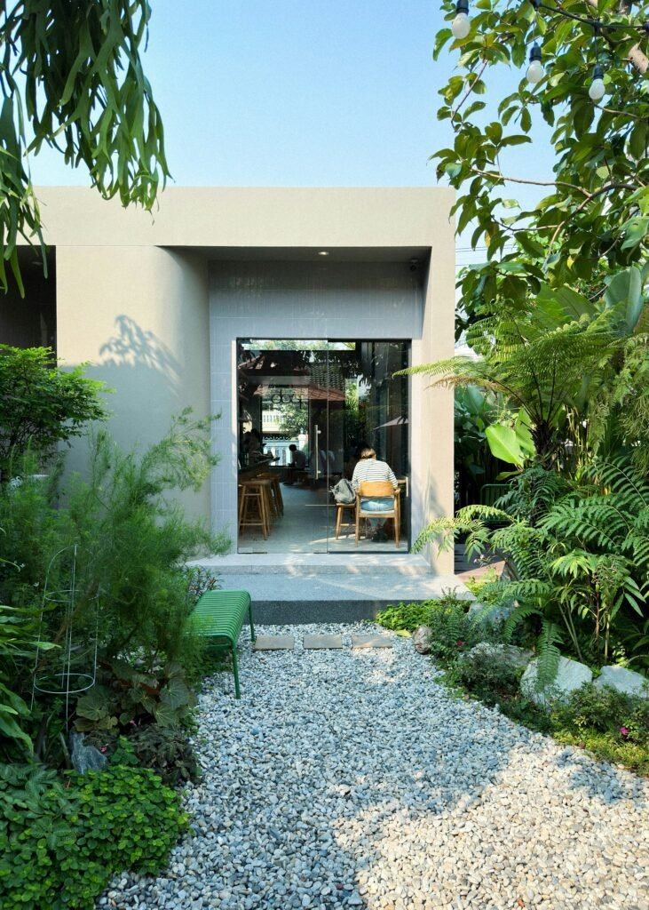
6. Add an Arbor or Archway
Nothing delivers instant fairytale atmosphere quite like an arbor dripping in climbing plants. It genuinely doesn't matter if it leads anywhere specific. The sense of mystery is the entire point.
A wooden structure tends to feel softer and more cottage-appropriate than a sleek metal one, though either works once clematis, honeysuckle, or wisteria takes over.
Walking under one in full bloom, with flowers hanging overhead like chandeliers, is the kind of moment that makes a garden feel genuinely magical rather than just nicely planted.
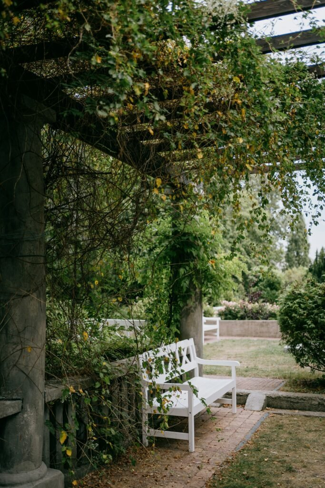
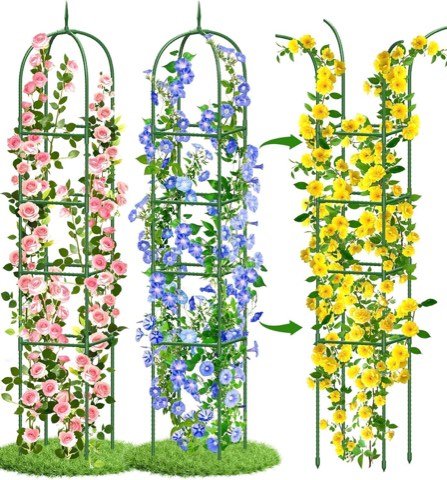
Garden Obelisk Trellis for Climbing Plants, 6 ft, Rustproof Coated Metal
Shop on Amazon7. Let Flowers Spill Over a Picket Fence
A white picket fence does more than mark a boundary. It frames the whole garden the way a mat frames a photo, giving structure to everything growing wild behind it.
Climbing roses are the classic choice, but anything that spills generously over the top works, hydrangeas tumbling over a fence make the same case for a slightly different plant.
If keeping a fence painted white sounds like more upkeep than you want, a weathered wood version does the job just as well once vines and flowering shrubs start softening its edges.
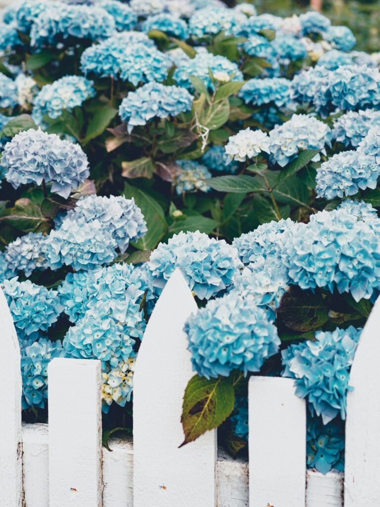
8. Plant a Mini Wildflower Patch
You don't need rolling countryside to pull this off. A wildflower patch works in a backyard corner just as well as it would on acreage, and it's one of the lowest-effort ideas on this entire list.
A mix of poppies, daisies, cornflowers, and cosmos swaying together captures exactly the kind of organized chaos a cottage garden is built on.
Scatter the seeds, water occasionally, and let nature do the actual designing. Within a few weeks you'll have something that looks carefully planned and is genuinely buzzing with bees and butterflies the whole season.
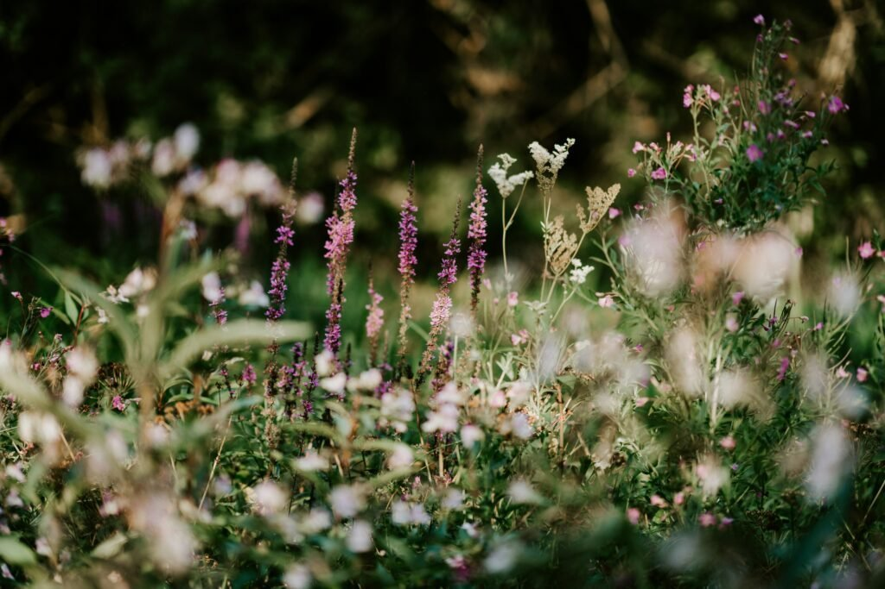
9. Tuck In a Cozy Seating Nook
A beautiful cottage garden with nowhere to actually sit in it is a missed opportunity. A tucked-away bench or small bistro setup turns the whole space from something you look at into something you use.
The best spots are corners surrounded by flowers rather than open lawn, a vintage iron bench half-enclosed by greenery feels like a genuine secret escape rather than patio furniture.
Add a cushion and maybe a candle or two, but keep it a little imperfect. A seating nook that looks too styled stops feeling like a retreat and starts feeling like a showroom.
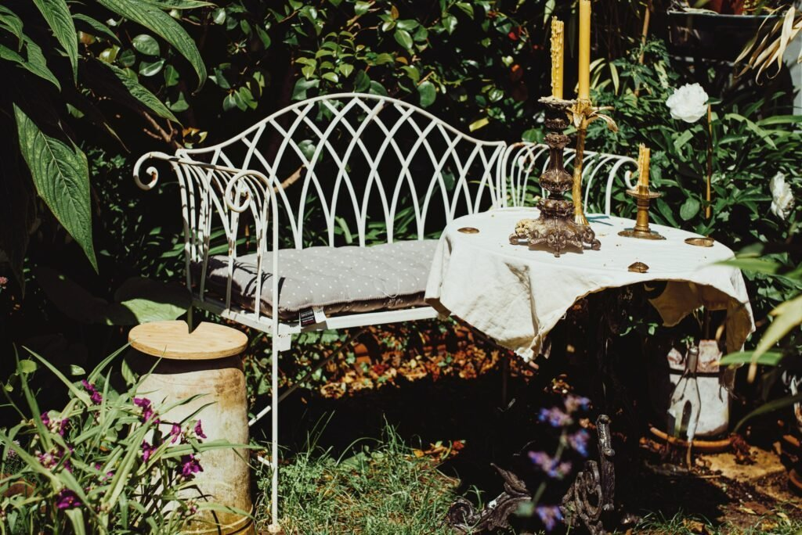
10. Let the Borders Overflow
If one single thing says cottage garden instantly, it's a border that looks like it's about to spill over onto the lawn. Stiff, evenly spaced edges are the opposite of what you want here.
Mix tall bloomers toward the back, roses and classic mid-height flowers through the center, and low groundcovers softening the front. The layering is what creates that lush, just-slightly-wild look.
Plant closer together than feels natural at first. Properly spaced plants leave gaps that kill the romantic effect, crowding them in is actually what makes a border feel alive instead of sparse.
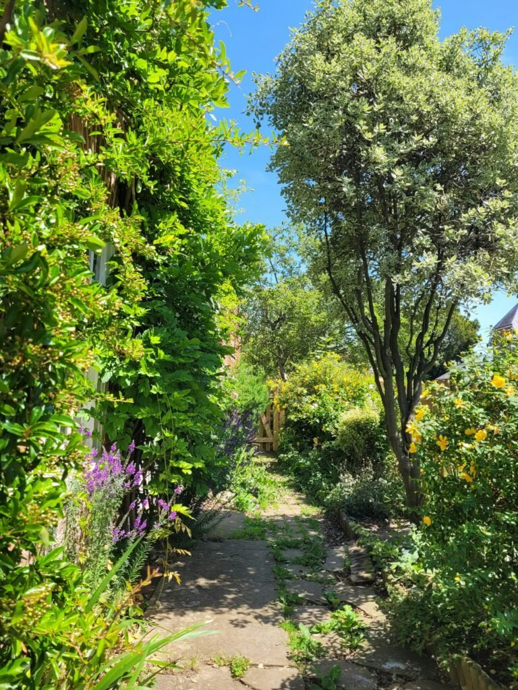
11. Build in Layered Heights
The single most common mistake in a first attempt at a cottage garden is planting everything at the same height. Flat reads as boring no matter how many flowers get packed in. The magic comes from layering.
Tall spires at the back, mid-height bloomers filling the middle, and trailing or low plants softening the front edge. That structure is what makes a bed look intentional instead of scattered.
A mix of pots and plantings at different heights does the same job even in a tight courtyard or side yard. A sprawling border isn't actually required to get the effect.
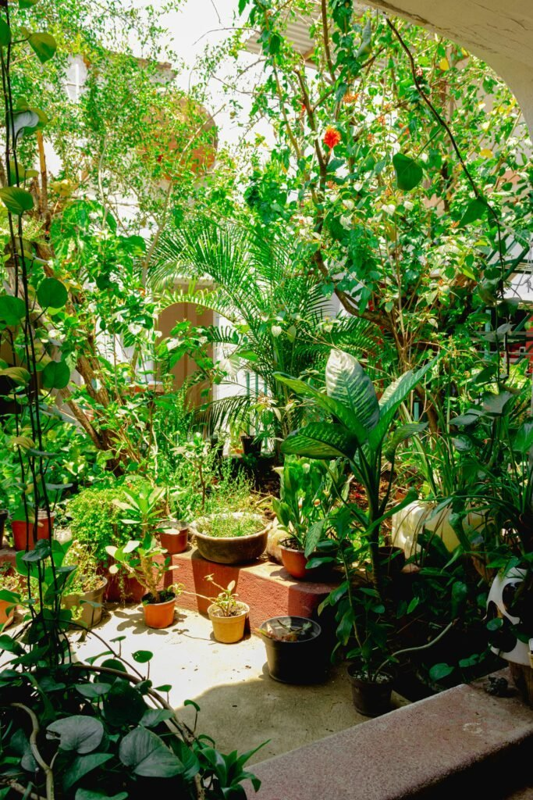
Worth 20 Inch Tall Planters, Set of 2, Black, Indoor Outdoor
Shop on Amazon12. Let Roses Take Over
You cannot talk about a cottage garden without talking about roses. They're the anchor plant the whole style is built around, and nothing else quite delivers the same mix of fragrance and old-world romance.
Old-fashioned varieties are the move here. They tend to be hardier and less fussy than modern hybrid teas, and they bloom in that slightly looser, fuller shape that reads as cottage rather than formal.
Train a climber over an arbor or along a fence and you get an entrance that feels like stepping through a doorway into somewhere else entirely. A single well-placed rose near a gate will get more compliments than almost anything else you plant.
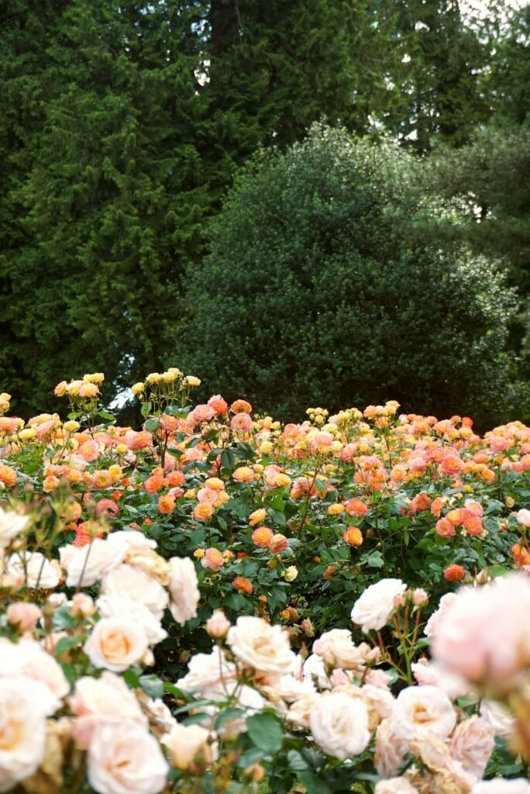
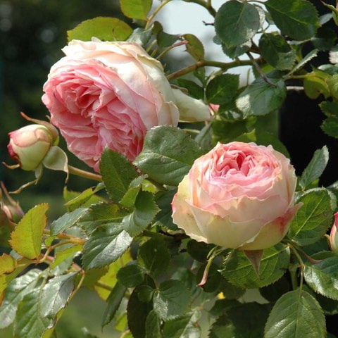
RedCrocus Eden's Climbing Rose, Fragrant Flowering Rose for Trellises & Arbors
Shop on AmazonFinal Thoughts
Twelve ideas, one underlying truth: the beauty of a cottage garden lives in its imperfections. Nothing here needs to match, and there's no strict rulebook to follow. The most enchanting gardens are simply the ones where the gardener's own personality comes through.
Start small with a patch of wildflowers, or go all in with a rose-covered arbor. Either way, give it a season to grow into itself. A cottage garden rewards patience more than any other style, and it only gets more storybook with time.
The years where it actually looks like something out of a storybook tend to be the ones where you stopped trying to control it and just let it do what it wanted.